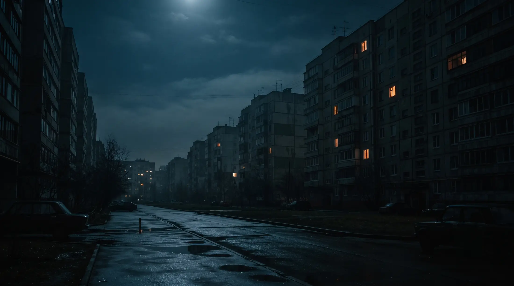
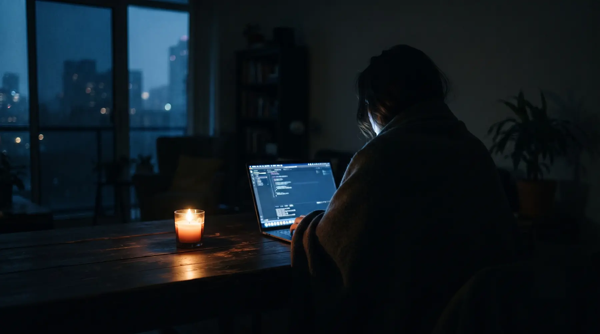
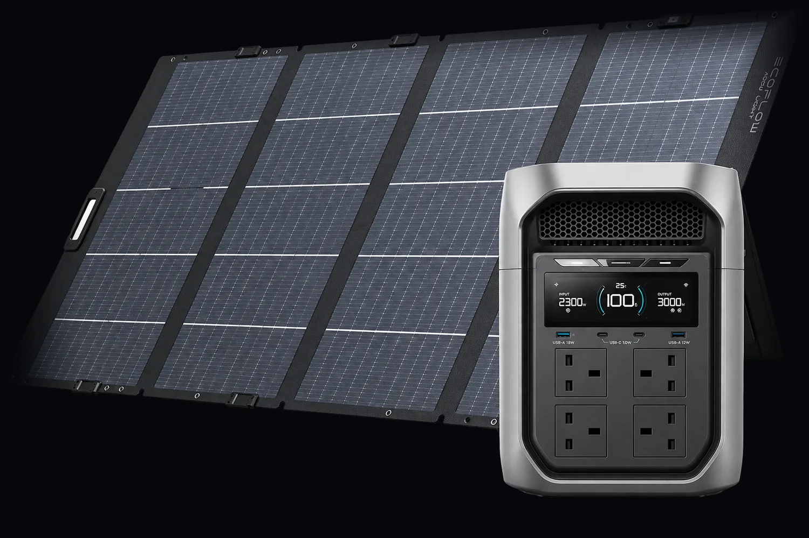
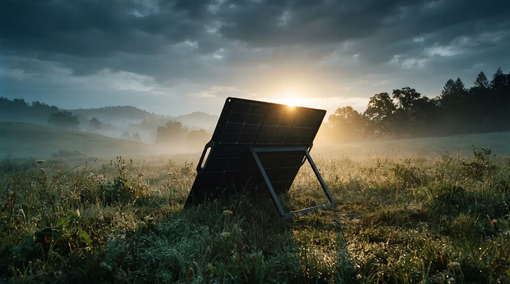
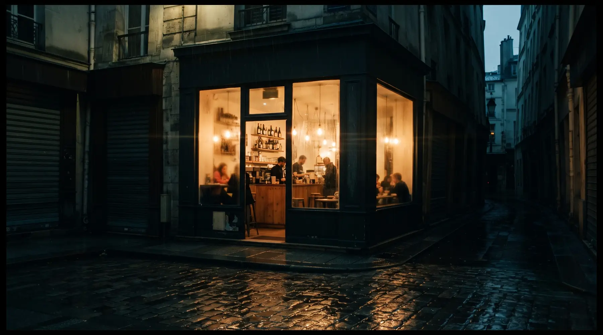
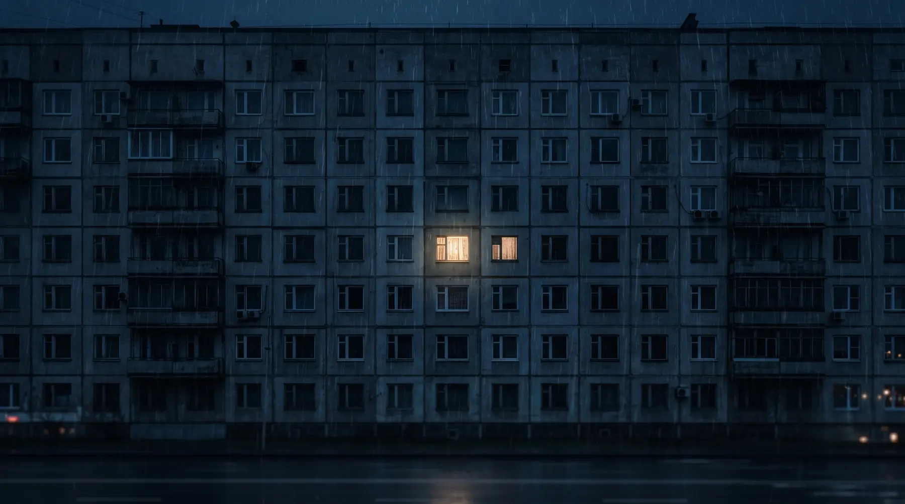

У місті темно.
У вас ні.
Дві кіловат-години власної електрики, чотири розетки на 3000 Вт і перемикання за вісім мілісекунд. Холодильник, котел, роутер і світло просто не помічають, що мережі більше немає.

18:40, друга черга поспіль
Темрява коштує дорожче, ніж здається
Чотири години без світла - це не чотири години незручностей. Це холодильник, який почав розморожуватись, котел, що скинув налаштування, робочий день, який не відбувся, і черговий похід за пальним для генератора.
- 0 Втвидає розетка, поки триває черга
- 68 дБшуму від бензинового генератора під вікном
- ~4 годтримає холод звичайний холодильник без живлення
- 20 000 мА·году павербанку - це 74 Вт·год, не вистачить навіть на чайник
Розетка, яка приїжджає до вас
Зарядна станція EcoFlow DELTA 3 Max Plus - це літій-залізо-фосфатна батарея, інвертор на 3000 Вт і власний блок безперебійного живлення в одному корпусі вагою 22 кілограми. Разом зі станцією їде складана сонячна панель на 400 Вт.

Лампа не встигає блимнути
Станція стоїть між мережею і технікою та пропускає струм крізь себе. Коли світло зникає, вона підхоплює навантаження за вісім мілісекунд. Комп'ютер не перезавантажиться, котел не скине програму, сигналізація не запищить.
Людське око помічає провал у живленні приблизно від ста мілісекунд. Тут - вісім.
Звичайна розетка
230 В · мережа
Через DELTA 3 Max Plus
230 В · мережа
Позначте, що має працювати
під час відключення
Розрахунок за корисною ємністю 1741 Вт·год: 2048 Вт·год мінус втрати інвертора. Реальні цифри залежать від пускових струмів і температури.

Паливо, яке не треба
шукати і купувати
Складана панель на 400 Вт із монокристалічними комірками, ККД 23% і захистом IP68. Розкладається на власній підставці за хвилину, працює під дощем і після роси. Станція приймає до 1000 Вт сонця, тож панелей можна поставити дві.
Світло дали на дві години -
цього досить
Станція бере з мережі до 1800 Вт і встигає набрати 80% ємності за годину з невеликим. Сонце і розетка працюють одночасно, тому в ясний день вікно між чергами закривається повністю.
Швидкість заряджання можна обмежити в застосунку, якщо шкода батареї або якщо проводка в будинку стара.
Вмикається все,
що є вдома
Чотири повноцінні розетки на 230 В тримають до 3000 Вт разом, а короткий пуск компресора або насоса переживають до 6000 Вт. Технологія X-Boost піднімає стелю до 3800 Вт для нагрівальних приладів: чайника, праски, фена.
Ноутбук заряджається напряму від USB-C на 140 Вт, без блока живлення.
- 4 ×Розетка 230 В3000 Вт разом · пік 6000 Вт
- 1 ×USB-C140 Вт · PD 3.1
- 2 ×USB-C45 Вт на порт
- 1 ×USB-A18 Вт · швидка зарядка
- 1 ×Anderson DC12,6 В · 30 А · 378 Вт
- 1 ×Автомобільний12,6 В · 10 А · 126 Вт
Десять років,
якщо розряджати щодня
Всередині літій-залізо-фосфат - хімія, яка не гріється і не втрачає ємність за два сезони. Навіть після 3500 повних циклів у батареї лишається щонайменше 80% початкового запасу. За звичного графіка це десять років роботи.
Гарантія виробника - п'ять років. Під навантаженням станція шумить тихіше за холодильник.
Сьогодні квартира,
завтра весь будинок
Ємність нарощується додатковими батареями до 10 кВт·год. Цього вистачає, щоб провести добу повного блекауту, не вимикаючи нічого взагалі - разом із бойлером, свердловинним насосом і кондиціонером.

Той, хто працює,
коли вулиця не працює
Холодильник, роутер, світло
Близько 140 Вт постійного навантаження. Станція закриває всі дванадцять темних годин доби і ще лишає запас на ранок.
Котел і насос
Циркуляційний насос і автоматика газового котла беруть близько 130 Вт. Опалення не зупиняється, труби не розморожуються.
Каса, термінал, вітрина
Кав'ярня чи майстерня працює далі, поки сусідні двері зачинені. Без диму, без пального і без дозволу на генератор.
Характеристики
Дані виробника для версії на 230 В. Габарити - як у невеликої дорожньої валізи, ручки з двох боків.
| Ємність | 2048 Вт·год · 51,2 В · 40 А·год |
|---|---|
| Тип комірок | LiFePO₄ (LFP), автомобільний клас |
| Ресурс | ≥ 3500 циклів до 80% ємності |
| Вихід змінного струму | 3000 Вт постійно, 6000 Вт пік |
| X-Boost | до 3800 Вт для нагрівальних приладів |
| Розетки | 4 × 230 В, до 20 А на порт |
| USB | 1 × USB-C 140 Вт, 2 × USB-C 45 Вт, 1 × USB-A 18 Вт |
| Постійний струм | Anderson 12,6 В / 30 А · авто 12,6 В / 10 А |
| Вхід від мережі | до 1800 Вт · 0 → 80% за 64 хв |
| Вхід від сонця | до 1000 Вт · 11-60 В · 15 А · два MPPT |
| Безперебійне живлення | перемикання < 10 мс (виміряно 8 мс) |
| Розширення | до 10 240 Вт·год додатковими батареями |
| Рівень шуму | ≤ 25 дБ |
| Вага | 22,1 кг |
| Габарити | 494 × 242 × 305 мм |
| Керування | Wi-Fi, Bluetooth, застосунок EcoFlow |
| Гарантія | 5 років |
| Панель у комплекті | 400 Вт · ККД 23% · IP68 · 12,5 кг |
Що зазвичай запитують
Чи потягне вона електрочайник?
Так. Чайник на 2000 Вт вкладається в 3000 Вт розеток, а якщо він потужніший, вмикається X-Boost і піднімає стелю до 3800 Вт. Одна чашка кави коштує приблизно 40 Вт·год, тобто 2% запасу.
Це замінює генератор?
Для квартири і невеликого бізнесу - так, з великим запасом. Станція не шумить, не потребує пального, не викидає вихлоп і працює в приміщенні. Генератор виграє лише там, де потрібно тижнями живити велике навантаження без сонця.
Що станеться, коли світло дадуть посеред ночі?
Станція сама перейде на заряджання і візьме з мережі стільки, скільки ви дозволите в застосунку. Уранці ви побачите повну батарею, навіть якщо світло було лише годину.
Скільки вона важить і як її носити?
22,1 кг, дві вбудовані ручки з боків. Це вага великої валізи: одна людина піднімає на поверх, але постійно переставляти з кімнати в кімнату незручно.
Чи можна лишати її ввімкненою постійно?
Так, це основний сценарій. Станція стоїть у розетці, техніка ввімкнена в неї, і вона автоматично підхоплює навантаження в момент відключення. У застосунку можна обмежити заряд до 80%, щоб батарея служила довше.
Скільки заряджатиметься від однієї панелі на 400 Вт?
У ясний день панель віддає приблизно 300-350 Вт реальної потужності, тобто повний цикл займає близько шести годин. Друга панель скорочує цей час удвічі: станція приймає до 1000 Вт сонця.

Хай це буде
ваше вікно
Комплект приїжджає готовим до роботи: станція, панель, кабелі. Увімкнули в розетку - і наступне відключення просто не станеться.
5 років гарантії · 3500 циклів · доставка з офіційного магазину EcoFlow